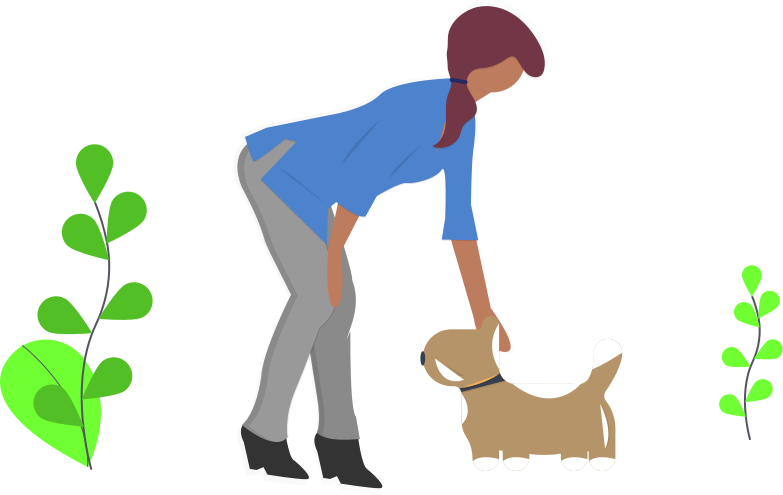

Software para adopción de mascotas
Mision mascota es una aplicación de escritorio que te ayuda a gestionar los datos de adoptantes, mascotas y adopciones de tu albergue o veterinaria.
Ver tutorial

¿Con qué tecnologías fue creado?


Java SE
Desarrollado en Java SE y su librería Swing para la implementación de interfaces
Ver repositorio¿Qué conocimientos se aplicaron?
Aplicación Java para escritorio
- Patrón de arquitectura de software MVC (Modelo, Vista, Controlador).
- DAO (Data Access Object).
- DTO (Data Transfer Object).
- Programación Orientado a Objeto.
- Conexión a base de datos.
- Escritura y lectura de ficheros.